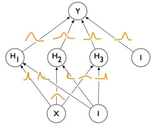
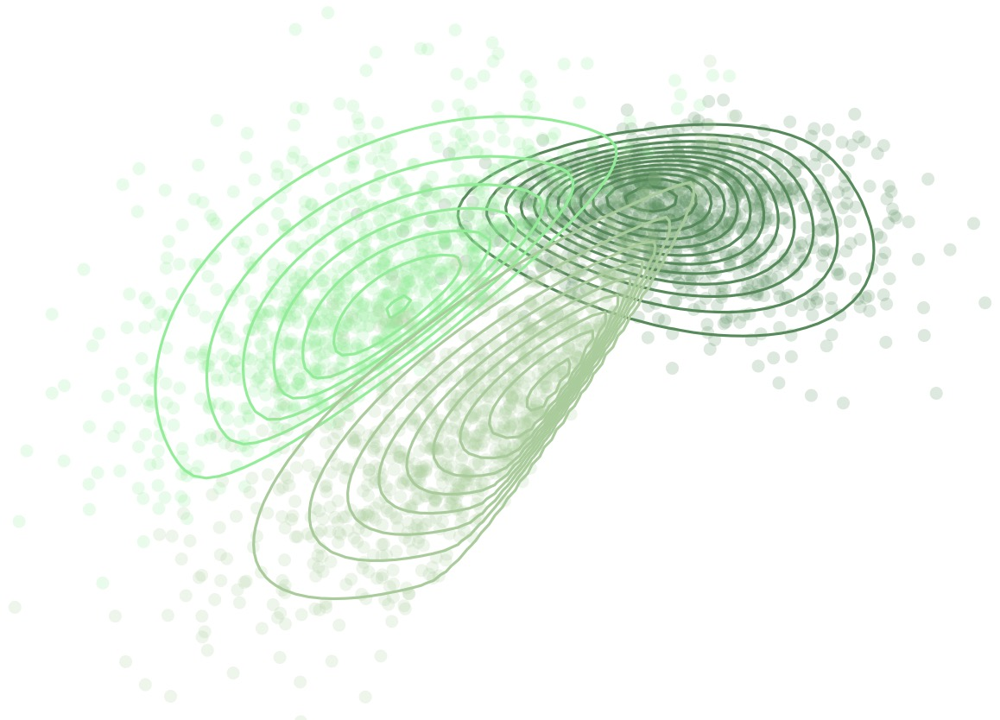
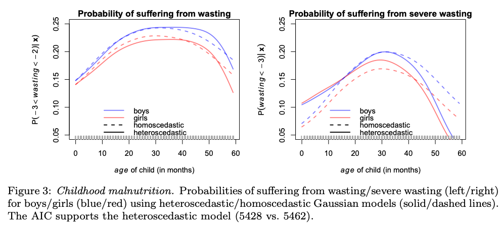
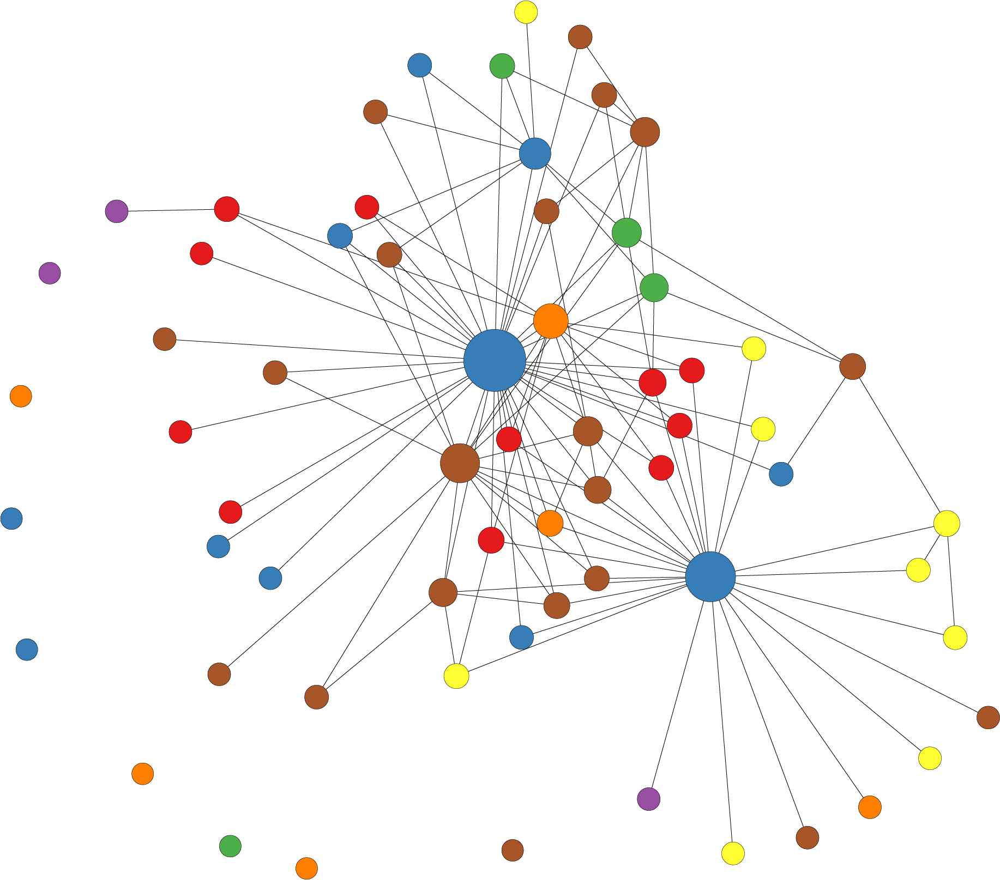
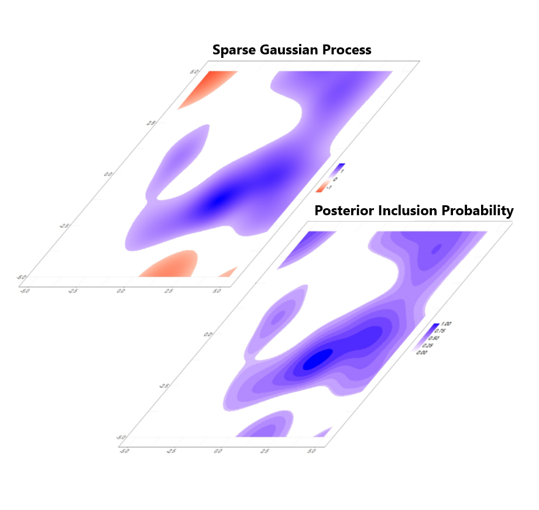
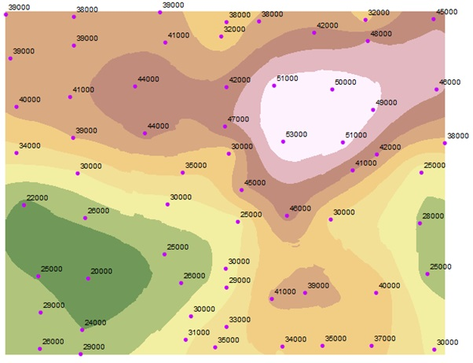

KleinLab - Methods for Big Data
Research
Research Interests
At MBD, we explore a question that's more relevant than ever in today's data-driven world: How can we design innovative, reliable, and generalizable methods to handle massive datasets and solve complex problems?
Our lab specializes in Bayesian learning methods, a powerful approach that allows us to incorporate prior knowledge into models, quantify uncertainties, and bring more clarity to the “black boxes” of machine learning. For example, we leverage expert insights or sparsity-inducing mechanisms to make models more accurate, robust, and data-efficient. By fusing the precision and reliability of Bayesian Statistics with the adaptability of Machine and Deep Learning, we aim to deliver the best of both worlds.
Our research spans theoretical analysis, method development and real-world applications. For instance, some of our members craft new priors, others develop scalable and trustworthy Bayesian neural networks, and some advance explainability of complex systems. On the application side, our methods include diverse fields—from analyzing complex biomedical data and predicting weather patterns to improving autonomous driving technologies.
Below you can find a selection of topics that we are working on.
-
Big Data Methods
The age of digitalization has lead to complex large-scale data that are too large or infeasible for traditional statistical methods, e.g., due to unstructured information such as videos. We develop algorithms and software that can address these challenges and that lead to fast and accurate estimation even for data with many observations or complex structures.
-

Bayesian Computational Methods
Bayesian computation is a powerful framework for tackling complex statistical problems. Our expertise lies in Markov Chain Monte Carlo (MCMC), Variational Inference, INLA and Approximate Bayesian Computation, which are used for estimating or approximating complex and high-dimensional posterior distributions with precision. By means of Bayesian principles, our methods excel in applications such as machine learning, data analysis, and decision-making under uncertainty. We specialize in modeling uncertainty and integrating prior knowledge seamlessly with data, providing a solid foundation for robust statistical analysis.
-

Bayesian Deep Learning
Bayesian Deep Learning is a state-of-the-art fusion of deep neural networks with Bayesian computational methods. There, we not only harness the power of neural networks for tasks like image recognition and natural language processing, but we also incorporate Bayesian principles. This means we can quantify uncertainty in predictions, improve model robustness, and enable reliable decision-making. Our research covers Bayesian neural networks, Bayesian optimization, and probabilistic programming to create models that not only make accurate predictions but also provide probabilistic measures of confidence in those predictions.
-

Copula Modelling and Regression Copulas
Copula modelling allows to characterize the joint distribution of multiple variables through a decomposition that separates modelling the marginal distributions and the dependence structure. This allows to study and model various forms of dependence, such as tail dependencies and non-linear relationships. Regression copulas further enhance this framework by incorporating regression structures through implicit copula processes, thereby enabling to model not only dependencies but also how they vary with covariates.
-

Distributional Regression
Distributional Regression is a cutting-edge statistical framework that goes beyond traditional mean regression models. We aim to model the entire distribution of the response variables, rather than just its mean. This enables us to capture richer and more nuanced information about the data, allowing for better insights and predictions. We leverage techniques such as quantile regression, conditional transformation models or regression copulas to accurately estimate the underlying conditional distributions as functions of structured but also unstructured input variables. Structured variables include classical tabular data, group-specific effects or spatial information and unstructured data can be images or text. Our research group specializes in developing and advancing Distributional Regression methods, exploring their applications in diverse fields, including economics, finance, and environmental science.
-

Network Analysis
Network analysis involves the study of complex systems involving connections between entities. When combined with probabilistic methods, it becomes a powerful tool for understanding uncertainty and relationships within real-world networks. We use techniques like Bayesian networks, Markov random fields, and probabilistic graphical models to capture dependencies, predict outcomes, and infer hidden information within networks to understand it better as a whole. By unveiling hidden patterns in these structures, ultimately decision-making in complex interconnected systems can be enhanced.
-

Smoothing, Regularization and Shrinkage
Smoothing plays a pivotal role in contemporary statistics and allows to avoid the common assumption that continuous covariates must have a linear effect on the response. Our preferred approach to smoothing entails the fusion of basis expansions with conditionally Gaussian regularization priors to prevent overfitting.
We offer theoretical guarantees, delve into the selection of appropriate hyperpriors and relax conventional assumptions to achieve adaptive or anisotropic smoothing.
Leveraging recent developments for Bayesian shrinkage priors allows us to perform effect selection in non-standard regression models, even when the response distribution diverges from the typical exponential family. Within this research area, we have the capability to estimate numerous smooth nonlinear effects and we apply these techniques across a wide range, including real estate economics, public health and climatology. -

Spatial Statistics
Spatial statistics focuses on analysing and understanding geographic or spatial data. Such spatial models play a crucial role in various disciplines, such as urban planning, epidemiology, environmental science, and resource management. Our group develops state-of-the-art Bayesian spatial models with particular interest in nonparametric and distributional approaches, e.g. spatial implicit copulas. Such approaches allow us to incorporate prior knowledge and uncertainty into our spatial analyses, providing a more robust and flexible framework for capturing spatial dependencies and generating reliable predictions in the presence of limited data.